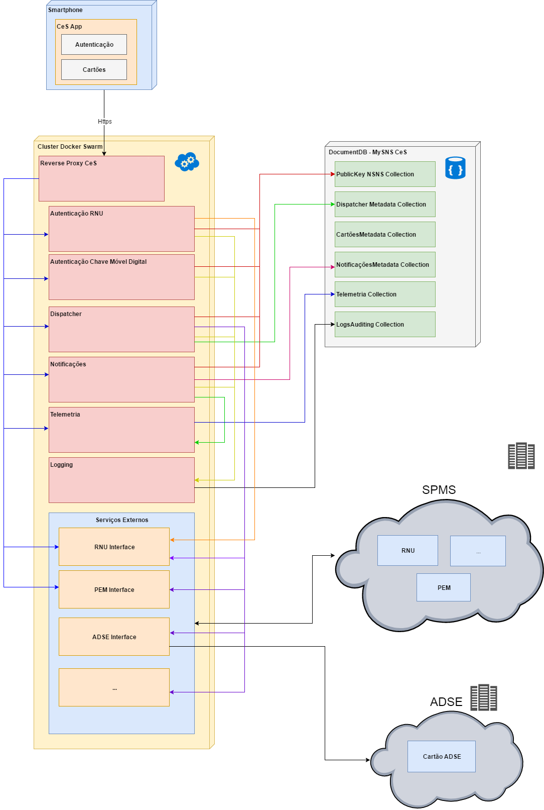
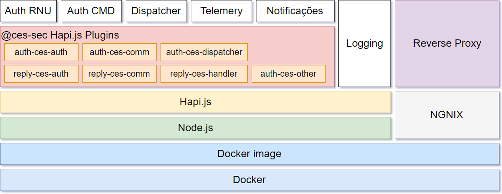

Backend - Serviços
Arquitectura
Nesta aplicação utilizou-se o Docker Swarm (ver a secção Serviços para mais informações) no Azure Container Service. O Docker Swarm, utilizando a API do Docker nativa, fornece um ambiente para a implementação de cargas de trabalho de conteúdo através de um conjunto agrupado de anfitriões de Docker.

No diagrama acima, é possivel identificar duas secções no Container Service: Core e Integrações
A aplicação comunica diretamente com o Reverse Proxy CeS. Cada serviço é executado num contentor Docker. Todos os contentores Docker são independentes (possuindo cada um o seu Dockerfile), pelo que a inoperabilidade de um não afeta os restantes.
A orquestração é feita segundo um ficheiro de configuração – docker-compose.yaml.
Contentores Docker:
- Autenticação RNU - responsável pela validação dos dados. Se forem validos, responde OK e envia uma sms com codigo TOTP pelo serviço da SPMS e faz um novo reply com o codigo TOTP (2-step authentication).
- Autenticação CMD - redirecciona o cidadão para a pagina Autenticação.GOV. Depois de o cidadão se autenticar, é gerada uma chave.
- Dispatcher - toda a comunicação da CeS, excepto Telemetria e Autenticação. No futuro, irá fazer a avaliação de Requests e Replies.
- Notificações -
- Telemetria - dados estatísticos (quantas pessoas iniciaram sessão, descarregaram cartões, etc)
- Logging - auditorias e logs
As integrações são os serviços externos, que facilitam o acesso aos servidores SPMS e ADSE. Para tal, criou-se uma interface para cada serviço acedido (RNU, PEM, ADSE). Cada serviço é executado num contentor Docker próprio e isolado. É criada uma rede virtual no Docker para isolar os contentores de integração dos de serviços Core.
No Core do Azure Container Service, encontram-se os serviços que comunicam com a base de dados DocumentDB, responsável pelo armazenamento de logs encriptados para diagnóstico de problemas de funcionamento da aplicação, telemetria, associação (encriptada) do dispositivo ao cidadão e ainda metadatas de cartões, notificações e dispatcher. Estes dados não são armazenados no dispositivo móvel, mas sim da base de dados de backend (DocumentDB).
Dados armazenados na DocumentDB
- PublicKeys NSNS Collection -
- Dispatcher Metadate Collection -
- CartõesMetadata Collection - Apenas guarda dados de Look and Feel - cor, logo etc, não armazenando quaisquer dados pessoais
- NotificaçõesMetadata Collection
- Telemetria Collection - dados estatísticos
- LogAudition Collection - auditorias e logs
Serviços e Tecnologias

Operations support systems (OSS)
Node.js
É um runtime de Javascript Server-side. Permite trabalhar na mesma linguagem e ambiente no frontend e backend (equipas mais compactas).
É amplamente suportado por muitas empresas comerciais e Node.js Foundation (Linux Foundation), tendo a maior comunidade no GitHub
É utilizado por: PayPal, Netflix, LinkedIn, Uber, IBM
Hapi.Js
Web and services application framework - framework de Node.js para desenvolver serviços baseado na configuração. Criado no Wallmart Labs para responder às necessidade do Wallmart.
É utilizado por: PayPal, Disney, GOV.UK, mozzila, Yahoo, etc
- mais informações
- github - Hapi.Js + TypeScript
- Biblioteca Joi - Object schema description language and validator for JavaScript objects.
Plugins Hapi.js criados:
Autenticação
- auth-ces-auth
- auth-ces-comm
- auth-ces-dispatcher
- auth-ces-other
Resposta
- reply-ces-auth
- reply-ces-comm
- reply-ces-handler
PM2
PM2 é um Process Manager de Node.js para aplicações em produção, com balanceador de carga incorporado.
PM2 é um gerenciador de processos de produção para aplicativos Node.js com load balancer incorporado. Facilita as tarefas comuns do administrador do sistema, tais como: criar Cluster aplicacional, Workflows de deployment, Gestão de Logs e Monitorização
É utilizado por: PayPal, Microsoft, IBM, etc
Docker
Docker é um projeto open-source que permite criar um contentor (container) com a infraestrutura que se pretender por forma a poder partilha-la em qualquer máquina e manter sempre o mesmo comportamento. Este contentor contem um sistema operativo Linux lightweight, com o tradicional sistema de ficheiros e politicas de segurança que caracterizam o sistema operativo Linux, utilizando assim menos recursos de memória e espaço em disco. Em suma, permite compartimentalizar serviços e aplicações em qualquer tecnologia e executar em qualquer ambiente. É suportado pelos maiores fornecedores cloud (Amazon, Microsoft, Google).
É utilizado por: PayPal, BBC, eBay, GE, Spotify, ING, etc
DocumentDB / MongoDB
MongoDB
Base de Dados NoSQL open-source e cross-platform, sem esquemas (schemaless), orientado a documentos. Tem um bom suporte de JavaScript e uma grandde comunidade.
A informação é guardada no formato JSON.
É utilizado por: Forbes, BOSCH, Facebook, GOV.UK, McAfee, etc.
Azure DocumentDB
Base de Dados semelhante ao MongoDB, mas gerida na Cloud. Pertence à Microsoft Azure platform.
NGINX
NGINX é um servidor HTTP e reverse proxy open-source e de alta performance. Utilizado na CeS como reverse proxy, possui uma boa comunidade, com suporte comercial.
É utilizado por: Netflix, Hulu, GitHub, Airbnb, WorkPress, Eventbrite, etc
NPM modules
Node Package Manager. Todos os módulos criados para as aplicações MySNS podem ser consultados aqui:
Segurança - Bibliotecas e Tools
De modo a facilitar o entendimento da CeS, optou-se por descrever algumas bibliotecas e ferramentas.
Azure Key Vault:
O cofre de chave do Azure ajuda a salvaguardar as chaves criptográficas e os segredos utilizados pelas aplicações em nuvem e pelos serviços.
(RSA) jsrsasign
'jsrsasign' (RSA-Sign JavaScript Library) é uma biblioteca criptográfica opensouce que suporta RSA/RSAPSS/ECDSA/DSA signing/validation, ASN.1, PKCS#1/5/8 private/public key, X.509 certificate, CRL, CMS SignedData, TimeStamp & CAdES e JSON Web Signature(JWS)/Token(JWT)/Key(JWK)
Crypt AES - Crypto-js
Crypto-js é uma biblioteca JavaScript de padrões de criptografia.
Validação de JSON
TOTP
Para a gestão de passwords, utilizou-se o One-Time Password manager. Compativel com HOTP (counter based one time passwords) e TOTP (time based one time passwords). Suporta autenticação de dois fatores.